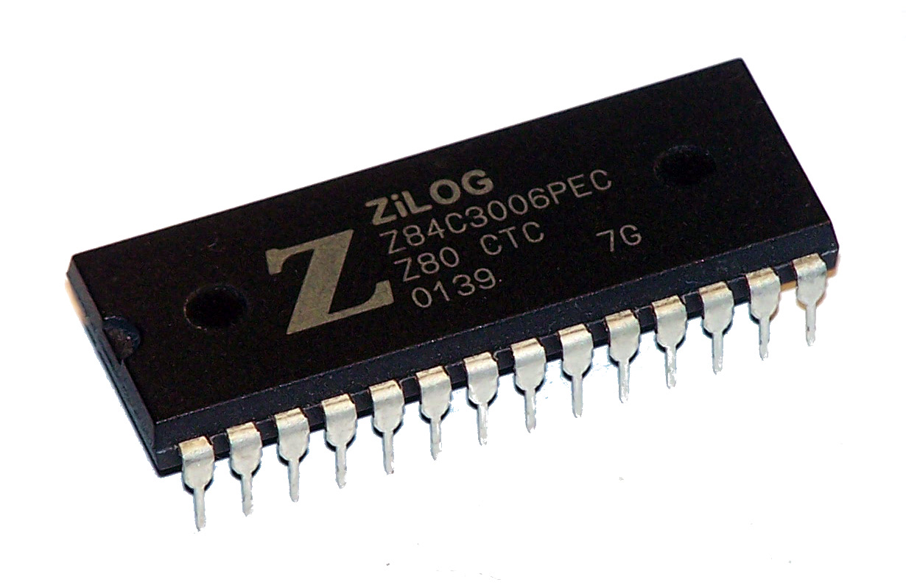

As with any product, the 6502 had competition in the world of 8-bit microprocessors.

The main competitor was the Zilog Z80. This was also an 8-bit microprocessor but with a very different assembly language that utilized a different architecture. There are actually many more different registers to use and many additional opcodes to the 6502.
Popular computers that used the Z80 include the TRS-80, ZX Spectrum, Sega MasterSystem and Sega GameGear.